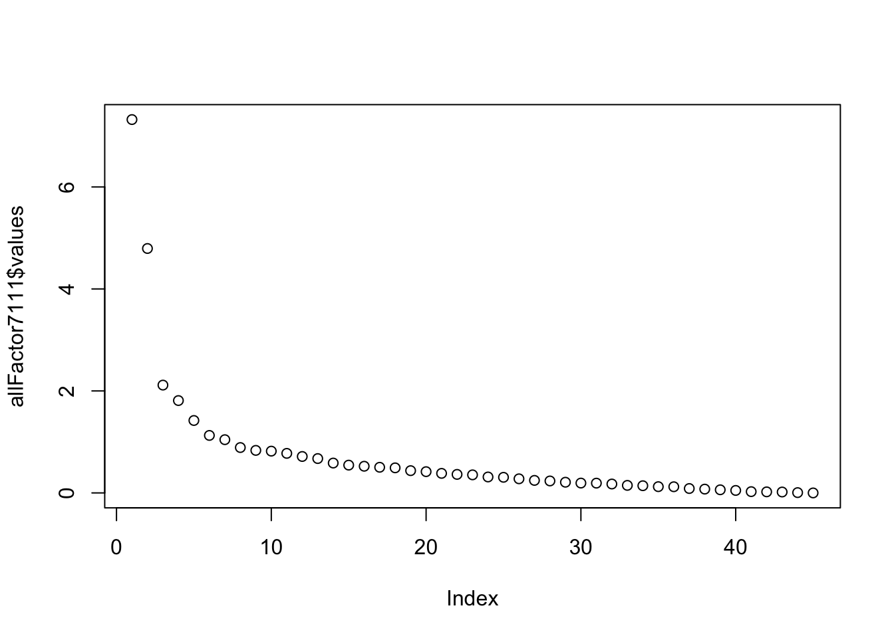

Chapter 27 Factor Analysis
27.1 Theory
27.1.1 Introduction
Factor analysis is used to uncover the latent structure of a set of variables. It reduces attribute space from a larger number of variables to a smaller number of factors and as such is a “non-dependent” procedure, meaning there is no outcome variable with this statistical procedure.
We get all sorts of scores on all these things, too many for regression, so we run a factor analysis. Question then is are there some existing variables that we are measuring with all DVs, not directly, to capture one underlying construct. FA uses matrix algebra to analyze the correlation between variables. We run FA, throw everything into R and see if we get any really big factors. Then end goal is that these three things will eventually explain most of the variance.
There are a lot of terms associated with factor analysis.
Reduces attribute space from large to small factors. It’s a non-dependent procedure. It does not assume a DV is specified.
27.1.2 Factor Analysis Purposes
There are a variety of reasons you might want to do a factor analysis…
- Reduce large number of variables to a small number of factors for modeling purposes
- Useful when large number of variables precludes modeling all the measures individually
- Establish that multiple tests measure the same factor
- Gives justification for administering fewer tests
- To validate a scale or index
- Done by demonstrating things that load on same factor
- Drop items which cross-load on more than one factor
- Select a subset of variables from larger set based on which original variables have the highest correlations with the principal component factors
- To create a set of factors to be treated as uncorrelated variables as one approach to handling multicollinearity in such procedures as multiple regression
- Identify clusters of cases/or outliers
- Cluster analysis happens with individuals
- To determine network groups, Q-Mode Factor
27.1.3 Types of Analysis
There are two main types of factor analysis Exploratory Factor Analysis or EFA and Confirmatory Factor Analysis or CFA. With Exploratory Factor Analysis, you are using theories to build some models. Often you will use a technique called Principal Compenent Analysis or PCA to do this. These two are not the same thing! The Andy Field book provides a brief description about the differences between the two, and some articles like Dombrowski, 2017 will go into detail about differences between using PCA or Factor Analysis based on if a latent variable is thought to be present. With CFA you are testing a theory.
27.1.3.1 Factors and Components
These are dimensions (or latent variables) identified with clusters of variables, as computed using factor analysis, Technically speaking, factors (as from Principal Factor Analysis PFA) represents the common variance of variables, excluding unique variance. This is a correlation focused approach seeking to reproduce the inter correlation among the variables. Components (as from PCA) reflect both common and unique variance of the variables Maybe be seen as variance focused approach seeking to reproduce both the total variable variance whit all components and to reproduce the correlations.
PCA is far more common than PFA. It is common to sue “factors” interchangeable with “components” PCA is used when research purpose is data reduction, reduce data set.
Factor Analysis is generally used when the research purpose is to identify latent variables which contribute to the common variance of the set of measured variables, excluding variable specific (unique) variance
Factor Analysis looks at how variance is shared amongst items.
27.1.4 PCA
Principal Components Analysis (PCA) is most common form of FA that seeks linear combinations of variable such that the maximum variance is extracted from the variables. It then removes this variance and seeks a second linear combination which explains the maximum proportion of the remaining variance. This is called the principal axis method and results in orthogonal uncorrelated factors.
???????Canonical factor analysis (what the hell is that?) also called d Rao’s canonical factor is different method few comping the same model as PCA. Looks for highest Caloocan correlation?????
27.1.4.1 Common factor analysis
Principal factor analysis (PFA) or principal axis factor (PAF), common Is form of FA which seeks the least number of factors which can account for the common variance (correlation) of a set of variables Again is different from PCA which seeks the set of factor switch can account for all the common and unique (specific plus error) variance in a set of variables For the geeks: PFA.
27.1.4.2 PCA vs Common Factor Analysis
For most data sets PCA and common factor analysis lead to same thing (Paper!)
PCA is preferred for purpose of data reduction. FA is preferred when the research purpose is detecting data structure or causal modeling. FA is also used in SEM.
Other Extration Methods
27.1.4.2.1 Image Factoring
based on correlation matrix of predicted variables rather than actual variables, where each variable is predicted from the others using multiple regression
27.1.4.2.2 Maximum Likelihood factoring
- Based on a linear combination of variables to form factors, where the parameter estimates are those most likely to have resulted in the observed correlation matrix, using MLE methods and assuming multivariate normality
- Correlations are weighted by each variable’s uniqueness
- Generates a chi-square goodness-of-fit test
27.1.4.2.3 Alpha factoring
- Based on maximizing the reliability of factors, assuming variables are randomly sampled from a universe of variables
- All other methods assume cases to be sampled and variables fixed
27.1.4.2.4 Unweighted lead squares factoring
- Based on minimizing sum of squares …
27.1.4.2.5 Generalized least squares factoring
- Based on minimizing the sum of squared differences between observed and estimated correlation matrices, not counting the diagonal.
- Based on adjusting ULS by weighting the correlations inversely according to their uniqueness (more unique variables are weighted less)
- GLS also generates a chi-square goodness-of-fit test
27.1.4.3 Factor Loadings
Analogous to Pearson’s \(R\), the squared factor loading is the percent of variance in that indicator variable explained by the factor. Also called component loading in PCA. If it’s high we call it an indicator variable, as long as it’s not highly correlated with other variables. To get the percent of variance in all variables accounted for by each factor, add the sum of the squared factor loading for that factor (column ) and divide by the number of variables. The number of variables equals the sum of their variance as the variance of standard variable is 1. This is the same as dividing the factor’s eigen value by the number of variables.
27.1.4.4 Communality or \(h^2\)
This is the squared multiple correlation for the variable as dependent using the factors as predictors. The commonality measures the percent of variance in a given variable expand by all the factors JOINTLY and may be interpreted as the RELLIABILITY OF THE INDICATOR.
27.1.4.4.1 Low Communality
When an indicator variable has a low communality, the factor model is not working well for that indicator and possibly it should be removed from the model. Low communalities communalities across the set of variables indicates the variables are little related to each other However communalities must be interpreted in relation to the interpretability of the factors.
If item has LOW commonality, might want to think about removing that variable. Related in relation to interpreitablity of the factors.
A commonality of .75 seems high but is meaningless unless the factor on which the variable is loaded in interpretable, though it usually will be. A commonality of .25 seems low but may be meaningful if the item is contributing to a well-defined factor.
What is critical is not the coefficient per se, but rather the extent to which the item plays a role in the interpretation of the factor, though often this role is greater when communally is high.
27.1.4.4.2 Suprrious solutions
If the commonality exceeds 1, there is a supruious solution, which reflect too small a sample or the researcher has too many or two few factors. If it looks too good, it probably is. Every model we come up with in psychology is underspecified.
27.1.4.5 Eigenvalues
These are byproduct of of matrix transformations. Eigenvalue for given factor measure the variance in all the variable which is accounted for by that factor. Really what we are doing here is looking at correlations in a lot of different ways. The ration of eigen values = ration of explanatory importance of vectors with respect to the variables.
The sum of eigen values of one factor over the sum of ALL the eigen values is the explanatory ability of that factor.
If a factor ha a low eigen value then it is contribution little to the explanation of variance in the variables and maybe be ignored as reduction with more important factors.
The eigenvalue is not the % of variance explained! It is a measure of amount of variance in relation to total variance. Since variables are standardized to have mean of 0 and variance of 1, total variance is equal to the number of variables.
Criterial for determing the number of factors. There are no rules, just some pointers.
27.1.4.5.1 Selecting Eigen Values
The most important pointer for determining the number of factors is comprehensibility which is not mathematical criterion, these factors have to make sense. You have to be able to explain them at some point to another human being. In most FA you will find that once you get to beyond 2-3-4 factors, it’s hard to think what each of those factors represent. Often you use one or more of the methods below to determine an appropriate range of solutions to investigate.
27.1.4.5.2 Kaiser Criterion
A commons rule of thumb for dropping the least important factor from the analysis in the KI rule Drop all components with eigenvalues under 1.0. This may overestimate or underestimate the true number of factors. Considerable simulation study evinced suggest it usually overestimates the true number of factors No recommended when used as the sole cut off criterion for estimated the number of factors.
27.1.4.5.3 Scree Plots
The Cattell scree test plots the components as the X axis and the corresponding eigenvalues as the Y axis. As you move to the right, the eigenvalues drop. When the drop ceases and the curve make an below toward less steep decolien, Cattells scree test says to drop all further comments AFTER the one starting the elbow. This rule is sometimes criticized for begin amenable to research-controlled fudging. That is as picking the elbow as picking the “elbow” can be subjective because the curve has multiple elbows or is a smooth curve, the researcher may be tempted to set the cut-off at the number of factors desired by his or her research agenda. The scree criterion may result in fewer or more factor than the Kaiser criterion.
Find the elbow and delete everything AFTER it.
27.1.4.5.4 Parallel Analysis
New one, often recommended as best method to asses the true number of factors. Selects factors that are greater than random. The actual data are factor analyzed, and separately one does a factor analysis of a matrix of random numbers representing the same number of cases and variables For both actual an d random solutions, the number of factors on the x axis and cumulative eigenvalues on the y axis is plotted. When the two lines intersect determines the number of factors to be extracted.
27.1.4.5.5 Variance Explained Criteria
Some researcher just just rule to keep enough factors to account for 90% of variation When the researchers goal emphasis parsimony (explaining with as few factor as possible) the criterion could be as low as 50%.
27.1.4.5.6 Joliffee Criterion
Delete all components with eigen values under .7. May restful in twice as many factors as the Kaiser criterion. A less used, liberal rule of them.
27.1.4.5.7 Mean Eigen Value
Use factors whose eigen values are at or above the mean. This strict rule may result in too few factors.
27.1.4.5.8 Precautions
Before dropping a factor below one’s cut-off. Check it’s correlation with the DV. A very small factor can have a large correlation with DV, in which it should not be dropped Problem. You have to know what your DV is. As a rule of thumb, factors should have at least three high, interpretable loadings. Fewwer may suggest that he research has asked for too may factors. Want at least three items that that load on each factor.
27.1.5 Rotatation
Serves to make the output more understandable and is usually needed to facilitate the interpretation of factors. If you multiply a matrix by sign and cosines, it rotates it in space and what it does is minimize small correlations and maximizes big ones. Rotation retains all the information, but then just changes it. You are just rotation the matrix of factor loadings.
Normally you do rotation after.
The sum of the eigen values is not affected by rotation. Rotation will alter the eigenvalues (and percent of variance explained) of particular factors and will change the factor loadings. Since alternative rotations may explain the same variance. This is a problem often cited as a drawback factor. You can get different meanings based on different rotations!
If factor analysis is used, you might want to look for different rotations method to see which lead to the most interpretable factor structure. Realistically, you will often get very similar solutions (at least relatively).
No rotation is the default in SPSS. The original, unrotated principal components solution maximizes the sum of squared factor loadings, efficiently creating a set of factors which explain as much of the variance in the original variables as possible. The amount explained is reflected in the sum of the eigenvalues of all factors. However,unrotated solutions are hard to interpret because variables tend to load on multiple factors. Big problem with not rotating is that variables load on multiple factors.
27.1.5.1 Varimax Rotation
An orthogonal rotation of the factor axes to maximize the variance of the squared loadings of a factor (column) on all the variables (rows) in a factor matrix Has the effect of of differentiating the original variables by extracted factor. Each factor will tend to have either large or small loadings of any particular variable. A varimax solution yields results which make it as easy as possible to identify each variable with a single factor. This is the most common rotation option.
Orthogonality assumes that the latent variables are not related to one another, they are independent.
27.1.5.2 Quartimax Rotation
An orhtogonal alternative which minimizes the number of factors needed to explain each variable. This type of rotation generates a general factor on which most variables are loaded to a high or medium degree. Such a factor structure is usually not helpful to the research purpose. Maximizes loading on one most important factor.
27.1.5.3 Equimax Rotation
A compromise between equimax and quartimax.
27.1.5.4 Direct Oblmin
The standard method when you want a non-orthogonal (oblique) solution. As such, factors are allowed to be correlated This is will result in higher eigen values but diminishes interpretation of the factors.
27.1.5.5 Promax Rotation
An alternative non-orthogonal (oblique) rotation method which is computationally faster than than the direct oblimn method ad therefore is sometimes used for very large datasets.
27.1.5.6 Oblique Rotation
In oblique rotation you get both a patter matrix and a structure matrix. The structure matrix is simply the factor loading matrix as in orthogonal rotation. The pattern matrix, in contrast, contains coefficient which just represents unique contributions. The more factors, the lower the pattern coefficient as a rule since there will be more common contributes to variance explained. For oblique rotation, research looks at both the structure and patter coefficient when attributing a label to a factor.
27.1.6 Assumptions
Interval data is assumed. Kim and Mueller (1978 b 74-75) note that ordinal data may be used if it is though that the assignment of ordinal categories other that do not seriously distort the underlying metric scaling.
27.1.7 Problems wiht Catheorica Variables
Note that categorical variables with similar splits will necessarily tend to correlate with each other, regardless of their content (see Gorsuch, 1983). This is particularly apt to occur when dichotomies are used. The correlation will reflect similarity of “difficulty” for items in a testing context, hence such correlated variables are called difficulty factors. The researcher should examine the factor loadings of categorical variables with care to assess whether common loading reflects a difficulty factor or substantive correlation. Improper use of dichotomies can result in too many factors.
27.1.7.0.1 Problems with Dichotomous Data
Dichotomous data tend to yield many factors (by the usual Kaiser criterion), and many variables loaded on these factors (by the usual .40 cutoff), even for randomly generated data.
27.1.7.1 Valid Imputation of Factor Labels
Factor analysis is notorious for the subjective involved in imputing factor labels from factor loading.
27.1.7.1.1 No selection bias/proper specification
The exclusion of relevant variables and inclusion of irrelevant variable in correlation matrix being factored will affect, often substantially, the factors which are uncovered.
27.1.7.1.2 No Outliers
Outlive can impact correlations heavily distorting results. The better your correlations, but better your factor analysis.
27.1.7.1.3 Linearity
Same as other tests
27.1.7.1.4 Multivariate nomrality
Ideally also MVN.
27.1.7.1.5 Homoscedacity
Since factors are linear function of measured variables, homscedascity of the relationship is assumed. Not considered a critical assumption of factor analysis.
27.1.8 Running It
- Select and measures variables
- Prepare the correlation matrix
- Extract factors
- Determine Number of Factors
- Rotate factors
- Interpret results
- Selecting and Measuring Variables 8 Sample size: T&F recommends at least 300. Number of variables to include, at least 3 measures per factor, preferable 4 or more.
27.1.8.1 Breezin’
Factor Extraction
Extraction is the process by which factors are determined from a larger set of variables. Are multiple factor extraction methods PCA is the most common extraction method. The goal is to extract factors that explain as much variance as possible with s few factors as possible– parsimony!
Determien Number of Factors Kaisers? Scree? A priori?
Factor Rotation Rotation is sued to improve interpret ability Orthogonal rotation == Factors are ind == Varimax
Oblique Rotation Factors are allowed to correlate Promax is recommended by Russel (2002)
Interpretation Interpret from rotation solution Naming Components, Ideally want variable to load >.40 on one factor and <.3 on all other factors. Generally exclude variable that load <.3 when interpreting a factor. Print option in SPSS to help interpretation: do not print loading < .30. order variable according to loading starting with Factor I.
If one item loads highly on 2, either new rotation or throw it out.
[FIND AND LINK THESE CITATIONS] Further Readings… Kim, Jae-On and Charles W. Mueller (1978a). Introduction to factor analysis: What it is and how to do it. Thousand Oaks, CA: Sage Publications, Quantitative Applications in the Social Sciences Series, No. 13. Kim, Jae-On and Charles W. Mueller (1978b). Factor Analysis: Statistical methods and practical issues. Thousand Oaks, CA: Sage Publications, Quantitative Applications in the Social Sciences Series, No. 14. Kline, Rex B. (1998). Principles and practice of structural equation modeling. NY: Guilford Press. Covers confirmatory factor analysis using SEM techniques. See esp. Ch. 7. Lance, Charles E, Marcus M. Butts, and Lawrence C. Michels (2006). The sources of four commonly reported cutoff criteria: What did they really say? Organizational Research Methods 9(2): 202-220. Discusses Kaiser and other criteria for selecting number of factors.
27.2 Practice
27.2.1 Data Preparation
Load in data, clean it.
require(psych)
require(MASS)## Loading required package: MASSrequire(GPArotation)## Loading required package: GPArotationlibrary(data.table)
fa7111data <- fread("datasets/sexRoles.csv")
fa7111matrix <- as.matrix(fa7111data)Initial Assumptions Tests
KMO(fa7111matrix)## Kaiser-Meyer-Olkin factor adequacy
## Call: KMO(r = fa7111matrix)
## Overall MSA = 0.84
## MSA for each item =
## subno helpful reliant defbel yielding cheerful indpt athlet
## 0.52 0.90 0.87 0.85 0.86 0.76 0.85 0.77
## shy assert strpers forceful affect flatter loyal analyt
## 0.84 0.88 0.87 0.87 0.83 0.76 0.82 0.86
## feminine sympathy moody sensitiv undstand compass leaderab soothe
## 0.74 0.89 0.63 0.83 0.88 0.85 0.83 0.87
## risk decide selfsuff conscien dominant masculin stand happy
## 0.85 0.86 0.84 0.87 0.90 0.81 0.88 0.77
## softspok warm truthful tender gullible leadact childlik individ
## 0.78 0.89 0.70 0.88 0.72 0.81 0.67 0.86
## foullang lovchil compete ambitiou gentle
## 0.64 0.74 0.82 0.81 0.87cortest.bartlett(fa7111matrix,n=369)## R was not square, finding R from data## $chisq
## [1] 5809.284
##
## $p.value
## [1] 0
##
## $df
## [1] 99027.2.2 Analysis I
Look at all factor model
allFactor7111 <- fa(fa7111matrix,nfactors=45,rotate="none")
plot(allFactor7111$values)
Do a 2 factor analysis with rotation
twoFactor7111 <- fa(fa7111matrix,nfactors=2,rotate="varimax")
twoFactor7111$loadings##
## Loadings:
## MR1 MR2
## subno -0.108
## helpful 0.312 0.389
## reliant 0.462 0.144
## defbel 0.439 0.199
## yielding -0.140 0.344
## cheerful 0.146 0.384
## indpt 0.539
## athlet 0.265
## shy -0.406
## assert 0.606
## strpers 0.658
## forceful 0.642 -0.115
## affect 0.160 0.542
## flatter 0.224
## loyal 0.146 0.419
## analyt 0.301 0.127
## feminine 0.336
## sympathy 0.531
## moody -0.173
## sensitiv 0.121 0.429
## undstand 0.621
## compass 0.631
## leaderab 0.740
## soothe 0.590
## risk 0.439 0.162
## decide 0.545 0.131
## selfsuff 0.526 0.157
## conscien 0.320 0.330
## dominant 0.667 -0.237
## masculin 0.282 -0.287
## stand 0.617 0.183
## happy 0.114 0.441
## softspok -0.235 0.326
## warm 0.712
## truthful 0.110 0.313
## tender 0.694
## gullible -0.172 0.118
## leadact 0.734
## childlik -0.101 -0.120
## individ 0.464
## foullang 0.138
## lovchil 0.318
## compete 0.450
## ambitiou 0.419 0.142
## gentle 0.691
##
## MR1 MR2
## SS loadings 6.060 5.189
## Proportion Var 0.135 0.115
## Cumulative Var 0.135 0.25027.2.3 Analysis I
Using the criterion that items should load at least .4 on one factor and less than .3 on another factor, the following items were sorted out of the initial factor analysis. Taken together, these items seem to load on a factor that I would deem as patriarchal.
- 3 reliant 0.452 0.123 A
- 4 defbel 0.433 0.198 A
- 7 indpt 0.521 A
- 10 assert 0.605 A
- 11 strpers 0.657 A
- 12 forceful 0.650 -0.118 A
- 23 leaderab 0.764 A
- 25 risk 0.439 0.167 A
- 26 decide 0.540 0.120 A
- 27 selfsuff 0.509 0.141 A
- 29 dominant 0.671 -0.236 A
- 31 stand 0.605 0.179 A
- 38 leadact 0.761 A
- 40 individ 0.444 A
- 42 lovchil 0.326 A
- 43 compete 0.451 A
- 44 ambitiou 0.412 0.142 A
And the following items loaded on the second factor and given the high loadings of certain items, I think that this factor could be deemed as matriarchal.
- 5 yielding -0.136 0.336 B
- 6 cheerful 0.147 0.373 B
- 13 affect 0.171 0.556 B
- 15 loyal 0.146 0.419 B
- 17 feminine 0.108 0.325 B
- 18 sympathy 0.526 B
- 20 sensitiv 0.129 0.426 B
- 21 undstand 0.611 B
- 22 compass 0.106 0.628 B
- 24 soothe 0.581 B
- 32 happy 0.113 0.433 B
- 33 softspok -0.236 0.334 B
- 34 warm 0.720 B
- 35 truthful 0.106 0.316 B
- 36 tender 0.711 B
- 45 gentle 0.702 B
27.2.3.1 Interpretation
Interpret the meaning of the two factors (make up a story one or two paragraphs long based on which variable load heaviest on which factors). In other words, does factor one seem to capture some underlying characteristic of the variables, and does factor two seem to capture some different underlying characteristic of the variables. To make your task easier, I have listed the variable labels and the items to which they refer below.
I think the two characteristics here exemplify two qualities that pertain to gender roles that people are assumed to take in the public discourse. On one hand, the first factor has tons of items that seem like they would describe individuals that exemplify traditional patriarchal values (ala Butler, hooks). People who are able to identify with those types of values seem to benefit from societies that are based around power structures where it’s advantageous to be able to be on top of the competition in a very alpha-male-ish kind of way. That is not to say these qualities are intrinsically good or bad, but they seem to be the types of values that are valued by more conservative, traditional cultures and seen as strong desirable characteristics.
The second factor seems to load more on things that you would ascribe to matriarchal culture. Here you have a lot of the words that would traditionally be associated with motherhood. While this again is not claiming any sort of value judgment, or making a is/ought fallacy, I think most people would agree (especially in older generations) that the words in the second factor tend to be more associated with values that women in society are expected to adhere to and when they step outside of those bounds, are looked on as abnormal.
27.2.4 Analysis II
Since I used the suggested criterion of factors loading above .4 on one factor an less than .3 on the other, I decided to remove items that did not adhere to those loadings.
27.2.4.0.1 Instructions
Delete these variables from the analysis, and re-run the factor analysis (eigenvalues over 2.0). What effects did this have on your results (for example, look at variance explained among other things)?
#Removal of Items
removed_fa7111data <- fa7111data[,c(3,4,7,10,11,12,23,25,27,29,31,38,40,42,43,44,5,6,13,15,17,18,20,21,22,24,32,33,34,35,36,45)]
str(removed_fa7111data)## Classes 'data.table' and 'data.frame': 369 obs. of 32 variables:
## $ reliant : int 7 6 6 6 6 6 4 6 6 4 ...
## $ defbel : int 5 6 4 7 7 7 6 7 6 7 ...
## $ indpt : int 7 3 5 6 7 6 3 7 5 5 ...
## $ assert : int 7 4 4 4 7 4 3 5 5 5 ...
## $ strpers : int 7 1 4 3 7 2 4 6 7 6 ...
## $ forceful: int 2 3 3 3 5 2 1 6 6 4 ...
## $ leaderab: int 6 4 4 2 7 3 1 6 5 4 ...
## $ risk : int 2 3 3 5 7 1 1 4 4 2 ...
## $ selfsuff: int 7 5 6 6 5 7 4 6 6 5 ...
## $ dominant: int 1 4 2 4 6 2 1 4 5 4 ...
## $ stand : int 7 4 4 6 7 7 5 7 7 6 ...
## $ leadact : int 2 4 3 3 6 3 1 5 6 5 ...
## $ individ : int 7 4 6 5 6 7 5 7 6 6 ...
## $ lovchil : int 7 7 5 6 7 7 7 6 5 7 ...
## $ compete : int 7 4 2 4 7 1 1 4 3 4 ...
## $ ambitiou: int 7 4 4 6 7 5 1 4 5 4 ...
## $ yielding: int 5 6 4 4 4 4 6 5 4 4 ...
## $ cheerful: int 7 2 5 6 7 6 6 6 4 7 ...
## $ affect : int 7 5 5 5 7 5 7 7 6 7 ...
## $ loyal : int 7 5 7 7 7 7 6 7 6 7 ...
## $ feminine: int 2 5 6 6 4 7 4 6 6 5 ...
## $ sympathy: int 6 5 5 5 7 6 7 6 4 5 ...
## $ sensitiv: int 7 5 4 6 7 5 6 6 6 5 ...
## $ undstand: int 7 5 6 6 6 5 6 6 6 6 ...
## $ compass : int 7 4 6 6 7 5 6 6 5 6 ...
## $ soothe : int 7 4 7 6 7 5 6 5 5 6 ...
## $ happy : int 7 4 6 6 6 6 5 6 3 7 ...
## $ softspok: int 7 6 4 5 4 6 1 6 4 6 ...
## $ warm : int 7 5 5 6 7 6 5 6 5 7 ...
## $ truthful: int 7 6 7 6 7 7 5 7 6 7 ...
## $ tender : int 7 5 6 5 7 4 5 6 5 6 ...
## $ gentle : int 7 4 5 5 7 6 5 6 5 7 ...
## - attr(*, ".internal.selfref")=<externalptr>removed_fa7111matrix <- as.matrix(removed_fa7111data)
#View(removed_fa7111matrix)
removed_all <- fa(removed_fa7111matrix, nfactors = 32, rotate="none")
plot(removed_all$values) # Run Two factor model
removed_all_2 <- fa(removed_fa7111matrix, nfactors = 2, rotate = "varimax")
removed_all_2$loadings##
## Loadings:
## MR1 MR2
## reliant 0.448 0.123
## defbel 0.436 0.201
## indpt 0.529
## assert 0.617
## strpers 0.684
## forceful 0.661 -0.104
## leaderab 0.737
## risk 0.435 0.170
## selfsuff 0.495 0.129
## dominant 0.676 -0.228
## stand 0.605 0.185
## leadact 0.733
## individ 0.461
## lovchil 0.314
## compete 0.449
## ambitiou 0.416 0.128
## yielding -0.135 0.329
## cheerful 0.151 0.367
## affect 0.184 0.546
## loyal 0.145 0.418
## feminine 0.101 0.313
## sympathy 0.540
## sensitiv 0.123 0.446
## undstand 0.628
## compass 0.102 0.654
## soothe 0.589
## happy 0.109 0.418
## softspok -0.235 0.307
## warm 0.725
## truthful 0.319
## tender 0.697
## gentle 0.697
##
## MR1 MR2
## SS loadings 5.106 4.673
## Proportion Var 0.160 0.146
## Cumulative Var 0.160 0.306After removing the items that did not load on to the big variables, the amount of variance explained went up, as did the individual factor loadings.
27.2.4.0.2 Instructions
Re-run the factor analysis one more time, this time, set eigenvalues to be over 1.0. What effects did this have on your results (for example, how many factors are there now compared to your 2nd and 3rd runs, also look at variance explained among other things)?
#removed_all <- fa(removed_fa7111matrix, nfactors = 32, rotate="none")
plot(removed_all$values) # Run Two factor model
removed_all_2.1 <- fa(removed_fa7111matrix, nfactors = 5, rotate = "varimax")
removed_all_2.1$loadings##
## Loadings:
## MR1 MR2 MR3 MR4 MR5
## reliant 0.200 0.104 0.616
## defbel 0.402 0.150 0.195 0.215
## indpt 0.279 0.603 0.102
## assert 0.634 0.141 0.120
## strpers 0.701 0.140 0.149 0.149
## forceful 0.721 0.132
## leaderab 0.517 0.347 0.404
## risk 0.260 0.119 0.111 0.155 0.390
## selfsuff 0.154 0.692 0.180
## dominant 0.626 -0.178 0.186 0.249
## stand 0.508 0.165 0.149 0.287 0.140
## leadact 0.554 0.308 0.372
## individ 0.262 0.120 0.346 0.225
## lovchil 0.299 0.120
## compete 0.258 0.100 0.622
## ambitiou 0.134 0.170 0.644
## yielding -0.250 0.221 0.184 0.106
## cheerful 0.467 0.219
## affect 0.240 0.628 0.194 -0.117
## loyal 0.183 0.477 0.147
## feminine 0.250 0.154 0.211
## sympathy 0.166 0.680
## sensitiv 0.617 0.106
## undstand 0.247 0.685 0.148
## compass 0.282 0.734
## soothe 0.314 0.552
## happy 0.578 0.205
## softspok -0.436 0.209 0.130 0.171
## warm 0.675 0.322 0.125
## truthful 0.312 0.153 0.116 -0.117
## tender 0.659 0.285 0.196
## gentle -0.187 0.626 0.292 0.219
##
## MR1 MR2 MR3 MR4 MR5
## SS loadings 3.570 3.231 2.714 2.078 1.641
## Proportion Var 0.112 0.101 0.085 0.065 0.051
## Cumulative Var 0.112 0.213 0.297 0.362 0.414Now that we have five factors, the amount of total variance explained goes down and the factors as they are do not seem to make much sense. The earlier interpretation of the data seemed to be much clearer.